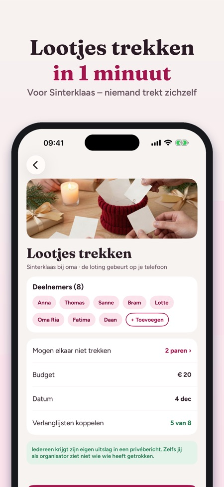
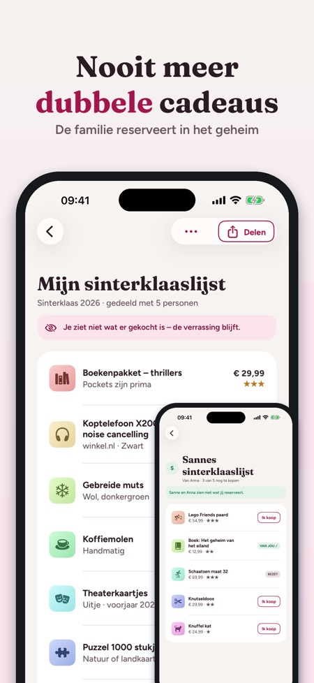
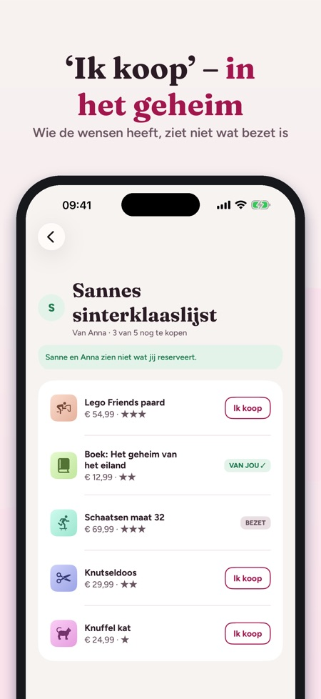

Sinterklaas- en kerstlijstje.



Het verlanglijstje voor de hele familie – nooit meer twee keer hetzelfde cadeau.
Maak een lijst per gelegenheid, deel hem met een link en laat de familie in het geheim reserveren. Oma ziet wat er nog over is, je neef ziet wat al bezet is, en wie de wensen heeft, ziet nooit wat er gekocht is.
SNEL WENSEN TOEVOEGEN
• Plak een link uit elke winkel – titel en afbeelding worden één keer opgehaald
• Deel direct vanuit Safari of een winkel-app: ‘Aan verlanglijst toevoegen’
• Eigen foto of alleen tekst
• Prijs, kleur/maat, aantal, hoe graag (één tot drie sterren), ‘meer dan één mag’ en een notitie voor de familie
DELEN MET DE FAMILIE
• Nodig uit via Berichten, WhatsApp of e-mail – delen via iCloud, geen account nodig
• Wie de app heeft, ziet de lijst live en tikt op ‘Ik koop’
• Wie de wensen heeft, ziet de reserveringen niet: de verrassing blijft
• Reserveren twee mensen hetzelfde, dan is het voor wie het eerst was
• Zonder de app: stuur de lijst als afbeelding of tekst
FAMILIE EN TE KOPEN
• Alle lijsten die met jou gedeeld zijn, per persoon en met de volgende datum
• Alles wat je nog moet kopen op één plek: gereserveerd, gekocht, ingepakt, gegeven
• Budget per persoon
FEESTDAGEN EN HERINNERINGEN
• Sinterklaas, kerst, verjaardagen, bruiloften, doop, communie, geslaagd en eigen data
• Herinnering 14 dagen van tevoren – met hoeveel wensen er nog over zijn
LOOTJES TREKKEN
• Voeg deelnemers toe, paren die elkaar niet mogen trekken, budget en datum
• De loting gebeurt op je telefoon en niemand trekt zichzelf
• Iedereen krijgt zijn lootje als privélink, die ook zonder de app opent – de organisator ziet de loting niet in de app
• Of geef de telefoon door en toon één voor één
LIJSTEN VOOR KINDEREN
• Maak lijsten voor je kinderen – alleen een voornaam, geen account voor het kind
AANKOOP
3 eigen lijsten en alles wat met geven te maken heeft (delen, reserveren, Te kopen, budget) werken zonder aankoop, net als lootjes trekken met maximaal 5 personen. Eén aankoop geeft volledige toegang: onbeperkt lijsten, meer lijsten voor kinderen, lootjes trekken met grotere groepen, cadeau-ideeën en exporteren als pdf. De aankoop geldt voor het hele gezin via Delen met gezin. Geen abonnement, geen advertenties.
PRIVACY
Lijsten worden op je apparaten en in je iCloud bewaard. De app stuurt anonieme gebruiksstatistieken via Google Analytics for Firebase (bijv. welke schermen en knoppen worden gebruikt, aankopen in de app en het land bij benadering); die kun je uitzetten in Instellingen.